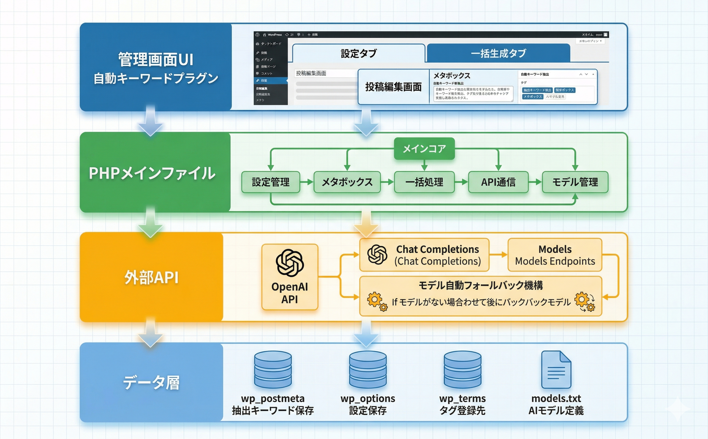

トラブルシューティング
よくある問題とその解決方法をまとめています。
キーワードが抽出されない
原因: OpenAI APIキーが未設定、または無効
1
設定画面でAPIキーが入力されているか確認する
2
「テスト」ボタンでAPIキーの有効性を確認する
3
APIキーが sk- で始まる正しい形式か確認する
4
OpenAIアカウントのクレジット残高を確認する
APIキーが正しくてもクレジット残高がない場合はエラーになります。
特定のモデルでエラーが発生する
原因: モデルが自動除外されている
1
設定画面の「除外されたモデル」セクションを確認
2
「復活させる」ボタンで除外を解除
3
または「一括復活」ボタンですべてのモデルを復活
エラーが発生したモデルは自動的に除外され、別のモデルにフォールバックします。これはAPI料金の無駄遣いを防ぐ安全機能です。
一括処理が途中で止まる
原因: APIレート制限またはタイムアウト
1
しばらく待ってから再度実行する
2
一度に処理する件数を減らす
3
ブラウザの開発者ツール（コンソール）でエラーを確認する
処理中はブラウザのタブを閉じないでください。
メタボックスが表示されない
原因: 投稿タイプが有効化されていない
1
設定画面を開く
2
対象の投稿タイプが有効になっているか確認する
3
設定を保存する
4
ブロックエディターの場合はページ下部までスクロールして確認する
動作要件
| 項目 | 要件 |
|---|---|
| WordPress | 5.0以上 |
| PHP | 7.4以上 |
| 必要なAPI | OpenAI API（APIキー必須） |
| 対応ブラウザ | モダンブラウザ |
技術仕様
- データ保存: wp_postmeta（抽出キーワード）、wp_options（設定）、wp_terms（タグ）
- カスタムテーブル: なし
- 外部通信: OpenAI API（https://api.openai.com/v1/chat/completions, /v1/models）
- 通信方式: wp_remote_post / wp_remote_get（SSL有効、タイムアウト30秒）
- モデルフォールバック: エラー時に自動で別モデルに切り替え
- Cronイベント: なし
- メール送信: なし
- セキュリティ: nonce検証、capability チェック（manage_options, edit_post）
